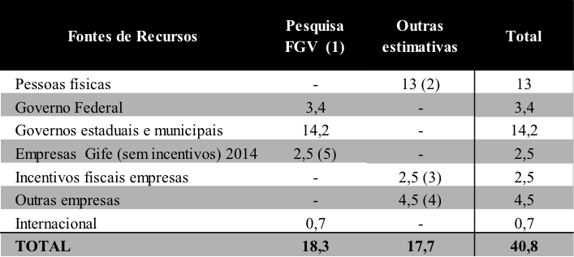
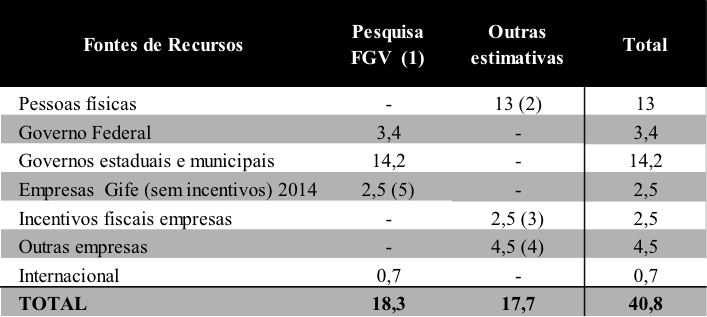
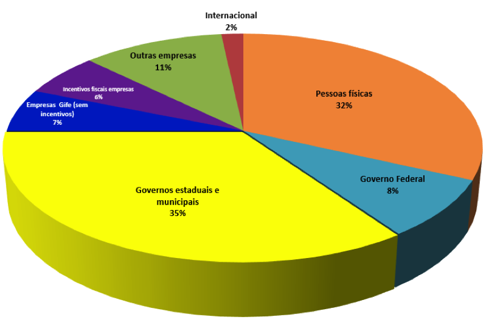

Fontes para Mobilização de Recursos - 4
19 de Dezembro de 2016 às 07:00
4 Fontes Institucionais
Por outro lado, os Governos estaduais e municipais têm formas próprias de seleção e distribuição de recursos. Para obtê-los, cada um deles deve ser contatado para conhecimento do mecanismo utilizado. Os legislativos federal, estaduais e municipais utilizam a ferramenta da apresentação de emendas para este tipo de apoio.
Somando-se as verbas do Governo federal e os valores dos Governos estaduais e municipais, esta fonte representa 43% dos valores recebidos pelas OSCs (MENDONÇA, 2013), sendo que muitas destas organizações se valem de percentuais acima de 80%, causando uma dependência que ameaça sua legitimidade e sustentabilidade no longo prazo.
Com recursos dos países do primeiro mundo, as embaixadas de vários deles no Brasil, por meio de formulários próprios, têm apoiado projetos e também é necessário um contato com cada uma delas, para averiguar o formulário adequado.
As agências multilaterais de financiamento, como a Organização das Nações Unidas - ONU e suas agências PNUD (desenvolvimento), PNUMA (meio ambiente), o Banco Mundial e os bancos regionais de desenvolvimento, também financiam projetos. Essas instituições multilaterais se interessam pelo fortalecimento institucional por meio de programas e projetos no Brasil. Seu processo de concessão de recursos é transparente, pois tem critérios claros para fazer esses financiamentos. No entanto, apenas as OSCs brasileiras com melhor estrutura conseguem esses recursos devido à burocracia e aos valores relativamente grandes envolvidos.
As agências financiadoras bilaterais dos Governos nacionais de países como Canadá, Japão, Alemanha, Inglaterra, EUA, entre outros, financiam projetos por meio de acordos de cooperação técnica internacional, intermediados pelos escritórios ou pelas agências de seus Governos. A implementação e a negociação dos projetos são feitas mediante acordos assinados pelo Brasil em âmbito internacional. Conforme estudo realizado pela Fundação Getúlio Vargas - FGV em parceria com a Articulação D3 “sobre a cooperação bilateral, foi possível constatar que, nos últimos quinze anos, o Brasil recebeu uma média de 184 milhões de dólares por ano” (MENDONÇA 2013, p. 34), contudo, esses valores pouco representam quando comparados às outras fontes de recursos.
No Brasil, as organizações comunitárias se tornaram uma fonte de recursos recentemente. Elas são e possuem a característica de associações, contudo, baseado no website da rede WINGS[2] que as denomina “fundações”, apresentam, ao redor do mundo, um forte crescimento na última década. Passaram de 905 no ano 2000 a 1.680, em 2010. No Brasil, no entanto, um dos poucos representantes deste tipo de organização é o Icom da Grande Florianópolis que, segundo seu website, assim se define[3]:
"As fundações comunitárias são instituições sem fins lucrativos, que mobilizam e investem recursos técnicos e financeiros com o objetivo de melhorar a qualidade de vida da população em uma determinada localidade.
São algumas das características do conceito:

Fontes:
(1) Pesquisa FGV e Articulação D3 (MENDONÇA, 2013)
(2) Pesquisa IDIS – Pesquisa doação Brasil[4]
(3) Receita Federal[5]
(4) Pesquisa PASE do IPEA 2006[6] excluindo os valores referente as empresas do GIFE e incentivos
(5) Censo GIFE 2014[7]
Referências
CRUZ, Celia Meirelles; ESTRAVIZ, Marcelo. Captação de diferentes recursos para organizações sem fins lucrativos. São Paulo: Instituto Fonte e Global, 2000.
GIVING USA, 2015.
Disponível em: http://givingusa.org/see-the-numbers-giving-usa-2016-infographic/
INSTITUTO BRASILEIRO DE GEOGRAFIA E ESTATÍSITICA (IBGE). As fundações privadas e associações sem fins lucrativos no Brasil, 2010. Rio de Janeiro: IBGE, 2012.
INSTITUTO PARA O DESENVOLVIMENTO DO INVESTIMENTO SOCIAL (IDIS). The World Giving Index 2015. Disponível em: http://www.cafamerica.org/wp-content/uploads/1755A_WGI2015_Report_WEB_V2_FINAL.pdf.
INSTITUTO DE PESQUISA ECONÔMICA APLICADA (IPEA). A iniciativa privada e o espírito público: um retrato da ação social das empresas no Brasil. Brasília: IPEA, 2006.
LANDIM, Leilah; BERES, Neide. Ocupação, despesas e recursos: as organizações sem fins lucrativos no Brasil. Rio de Janeiro: Nau, 1999.
MENDONÇA, Patricia Maria E. (coord). Pesquisa arquitetura institucional de apoio às organizações da sociedade civil no Brasil: Apresentação e resumo executivo São Paulo: Articulação D# - Diálogos, Direitos e Democracia e CEAPG – Centro de Estudos em Administração Pública e Governo da ESASP – FGV, fevereiro de 2013. Disponível em: .
PAES, José Eduardo Sabo. Fundações e entidades de interesse social: aspectos jurídicos, administrativos, contábeis e tributários. 5. ed. rev., atual. e ampl. de acordo com a Lei nº 10.406, de 10.1.2002 (Novo Código Civil brasileiro). Brasília: Brasília Jurídica, 2004.
Esta fonte congrega recursos públicos do Estado, bem como agências internacionais de financiamento e outras organizações.
O Estado brasileiro disponibiliza recursos por meio de auxílios e contribuições, subvenções, termos de parceria, convênios e contratos utilizando a ferramenta do portal de convênios – SICONV e por meio dos Ministérios da Cultura, da Saúde e dos Esportes, que possuem ferramentas próprias de incentivo fiscal. De acordo com Sá, chefe do gabinete do IPEA[1]:
O Estado brasileiro disponibiliza recursos por meio de auxílios e contribuições, subvenções, termos de parceria, convênios e contratos utilizando a ferramenta do portal de convênios – SICONV e por meio dos Ministérios da Cultura, da Saúde e dos Esportes, que possuem ferramentas próprias de incentivo fiscal. De acordo com Sá, chefe do gabinete do IPEA[1]:
"Em 2010, R$ 4,1 bilhões do orçamento liquidado foram para as OSCs - Organizações da Sociedade Civil. O montante representa 0,48% do PIB e em termos proporcionais, essas transferências ocupam um espaço menor do que ocupavam há 10 anos. As três principais áreas de apoio do Governo na atuação dessas entidades são ciência e tecnologia, educação e saúde."
Por outro lado, os Governos estaduais e municipais têm formas próprias de seleção e distribuição de recursos. Para obtê-los, cada um deles deve ser contatado para conhecimento do mecanismo utilizado. Os legislativos federal, estaduais e municipais utilizam a ferramenta da apresentação de emendas para este tipo de apoio.
Somando-se as verbas do Governo federal e os valores dos Governos estaduais e municipais, esta fonte representa 43% dos valores recebidos pelas OSCs (MENDONÇA, 2013), sendo que muitas destas organizações se valem de percentuais acima de 80%, causando uma dependência que ameaça sua legitimidade e sustentabilidade no longo prazo.
Com recursos dos países do primeiro mundo, as embaixadas de vários deles no Brasil, por meio de formulários próprios, têm apoiado projetos e também é necessário um contato com cada uma delas, para averiguar o formulário adequado.
As agências multilaterais de financiamento, como a Organização das Nações Unidas - ONU e suas agências PNUD (desenvolvimento), PNUMA (meio ambiente), o Banco Mundial e os bancos regionais de desenvolvimento, também financiam projetos. Essas instituições multilaterais se interessam pelo fortalecimento institucional por meio de programas e projetos no Brasil. Seu processo de concessão de recursos é transparente, pois tem critérios claros para fazer esses financiamentos. No entanto, apenas as OSCs brasileiras com melhor estrutura conseguem esses recursos devido à burocracia e aos valores relativamente grandes envolvidos.
As agências financiadoras bilaterais dos Governos nacionais de países como Canadá, Japão, Alemanha, Inglaterra, EUA, entre outros, financiam projetos por meio de acordos de cooperação técnica internacional, intermediados pelos escritórios ou pelas agências de seus Governos. A implementação e a negociação dos projetos são feitas mediante acordos assinados pelo Brasil em âmbito internacional. Conforme estudo realizado pela Fundação Getúlio Vargas - FGV em parceria com a Articulação D3 “sobre a cooperação bilateral, foi possível constatar que, nos últimos quinze anos, o Brasil recebeu uma média de 184 milhões de dólares por ano” (MENDONÇA 2013, p. 34), contudo, esses valores pouco representam quando comparados às outras fontes de recursos.
No Brasil, as organizações comunitárias se tornaram uma fonte de recursos recentemente. Elas são e possuem a característica de associações, contudo, baseado no website da rede WINGS[2] que as denomina “fundações”, apresentam, ao redor do mundo, um forte crescimento na última década. Passaram de 905 no ano 2000 a 1.680, em 2010. No Brasil, no entanto, um dos poucos representantes deste tipo de organização é o Icom da Grande Florianópolis que, segundo seu website, assim se define[3]:
"As fundações comunitárias são instituições sem fins lucrativos, que mobilizam e investem recursos técnicos e financeiros com o objetivo de melhorar a qualidade de vida da população em uma determinada localidade.
São algumas das características do conceito:
- atuação em uma área geográfica específica;
- seu Conselho reflete a diversidade de atores presentes na comunidade;
- faz doação para outras organizações da sociedade civil;
- possui uma ampla base de investidores sociais;
- procura desenvolver estratégias de sustentabilidade, como a formação de fundos permanentes ou patrimoniais."
O Instituto Rio e o Instituto Baixada Maranhense são outras experiências similares e, mesmo que este tipo de fonte não seja uma “fundação” comunitária, estas existem no Brasil como associações sem fins lucrativos e podem não restringir os aportes financeiros apenas à região de sua sede.
RESUMINDO os 4 primeiros artigos teremos os seguintes infográficos:
RESUMINDO os 4 primeiros artigos teremos os seguintes infográficos:
Valores aportados por fonte

Fontes:
(1) Pesquisa FGV e Articulação D3 (MENDONÇA, 2013)
(2) Pesquisa IDIS – Pesquisa doação Brasil[4]
(3) Receita Federal[5]
(4) Pesquisa PASE do IPEA 2006[6] excluindo os valores referente as empresas do GIFE e incentivos
(5) Censo GIFE 2014[7]

Michel Freller empreendedor social, palestrante, professor, consultor e facilitador. Mestre em Administração pela PUC-SP, atua junto as OSCs com ênfase em planejamento e mobilização de recursos com e sem incentivos. Fundador da Criando Consultoria ltda.
Referências
CRUZ, Celia Meirelles; ESTRAVIZ, Marcelo. Captação de diferentes recursos para organizações sem fins lucrativos. São Paulo: Instituto Fonte e Global, 2000.
GIVING USA, 2015.
Disponível em: http://givingusa.org/see-the-numbers-giving-usa-2016-infographic/
INSTITUTO BRASILEIRO DE GEOGRAFIA E ESTATÍSITICA (IBGE). As fundações privadas e associações sem fins lucrativos no Brasil, 2010. Rio de Janeiro: IBGE, 2012.
INSTITUTO PARA O DESENVOLVIMENTO DO INVESTIMENTO SOCIAL (IDIS). The World Giving Index 2015. Disponível em: http://www.cafamerica.org/wp-content/uploads/1755A_WGI2015_Report_WEB_V2_FINAL.pdf.
INSTITUTO DE PESQUISA ECONÔMICA APLICADA (IPEA). A iniciativa privada e o espírito público: um retrato da ação social das empresas no Brasil. Brasília: IPEA, 2006.
LANDIM, Leilah; BERES, Neide. Ocupação, despesas e recursos: as organizações sem fins lucrativos no Brasil. Rio de Janeiro: Nau, 1999.
MENDONÇA, Patricia Maria E. (coord). Pesquisa arquitetura institucional de apoio às organizações da sociedade civil no Brasil: Apresentação e resumo executivo São Paulo: Articulação D# - Diálogos, Direitos e Democracia e CEAPG – Centro de Estudos em Administração Pública e Governo da ESASP – FGV, fevereiro de 2013. Disponível em: .
PAES, José Eduardo Sabo. Fundações e entidades de interesse social: aspectos jurídicos, administrativos, contábeis e tributários. 5. ed. rev., atual. e ampl. de acordo com a Lei nº 10.406, de 10.1.2002 (Novo Código Civil brasileiro). Brasília: Brasília Jurídica, 2004.
Publicado por

Notícias mais populares
Gestão
Em agosto de 2017, a revista ÉPOCA e o Instituto Doar divulgaram a primeira ediç&...
Contexto e tendências
Criado para tornar mais transparentes as parcerias entre a administração públic...
Profissional captador
A captação de recursos é fundamental para a sustentabilidade de uma organiza&cc...